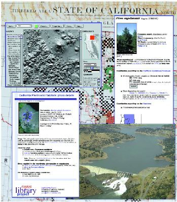

|
These pages are a copy of the original www.npaci.edu website, and should be used for historical reference only.
|
| DATA-INTENSIVE COMPUTING ENVIRONMENTS | Contents | Next
|
|
A Step Toward Universal Digital Library Services |
|
| PROJECT LEADERS Terrence Smith, UC Santa Barbara Hector Garcia-Molina, Stanford University Robert Wilensky, UC Berkeley Reagan Moore, SDSC Richard Lucier, California Digital Library |
PARTICIPANTS Mike Goodchild, Anurag Acharya, Divyakant Agrawal, James Frew, Donald Bren, Bangalore Manjunath, Richard Mayer, UC Santa Barbara |
he Internet allows computers to exchange data, and the Web gives computer users interactive access to information. But users of digital libraries and information grids need services to help them manage raw information and organize data into knowledge. The interagency Digital Library Interoperability project is building tools and services that go well beyond what current paper-based libraries allow users to do. The tools will provide the power to conduct intelligent searches, manipulate and analyze knowledge bases, collaborate in creating and sharing new knowledge, and manage copyright and access-restriction issues. Building on digital library efforts at UC Santa Barbara, Stanford University, and UC Berkeley, the project will create a testbed that exploits the software, high-performance computing, and data storage resources of SDSC and other Data-Intensive Computing efforts. The California Digital Library (CDL) will eventually put the new tools and services into everyday use."The materials that users of these services can access will range from collections of traditional text documents to repositories of photographs, maps, scientific data sets, computer programs, and videos," said Terence Smith of UC Santa Barbara, leader of the Digital Library Interoperability project. "Users will be able to create data sets, documents, commentaries, analyses, and software and share them across multiple data collections. The current infrastructure of the Internet and the Web not only lacks these tools and services, it fails to exploit the remarkable opportunities for collaborative creation and sharing of knowledge that a digital world makes possible." The Digital Library Interoperability project has three phases--research, development, and deployment--each of which is a stepping-stone toward the goal of a distributed shared library infrastructure and associated services. |
RESEARCH: THREE LIBRARIESDEVELOPMENT: THE TESTBEDDEPLOYMENT: INTO THE REAL WORLD |
|
 Figure 1. Combining Text, Graphics, and MetadataThe Berkeley Digital Library includes photographs, geographic data, botanical datasets, and environmental information in its collections. (Plant photos: Brother Alfred Brousseau, St. Mary's College; dam photo: California Department of Water Resources)
|
RESEARCH: THREE LIBRARIESThe project encompasses three digital libraries at UC Santa Barbara, Stanford University, and UC Berkeley that were established in 1996 under the Digital Library Initiative, a joint program of the NSF, the Defense Advanced Research Projects Agency, and NASA. Three new Phase 2 Digital Library Initiative (DLI2) projects form the core of the Interoperability research effort and reinforce one another in systems-centered, collections-centered, user-centered, and evaluation-centered research areas. One DLI2 project, the Alexandria Digital Earth Prototype (ADEPT), led by Smith, builds on the Alexandria Digital Library, which provides Web access to a diverse set of maps, images, and related materials in the Map and Imagery Laboratory at UC Santa Barbara. ADEPT will develop digital library environments and services based on the "Digital Earth" metaphor--an open, distributed, multi-resolution, 3-D representation of the planet, into which massive quantities of geographically referenced information can be embedded. In particular, researchers will be able to construct personalized collections called Information Landscapes--or Iscapes--from heterogeneous digital information across the Internet, and use these in education and across a range of disciplines, including the arts, humanities, and the social, physical, and biological The UC Berkeley Digital Library began as a testbed for research in computer science and information technology, but has evolved into a valuable repository of environmental and biological information (Figure 1). It currently holds roughly half a terabyte of data--including more than a million records in geographical and botanical databases--all freely accessible in online searchable databases. "The UC Berkeley Digital Library Project is developing the tools and technologies to support improved models for dissemination of and access to research publications--the 'scholarly information life cycle,' " said Robert Wilensky, head of the effort. "Journal publication is currently based on a centralized, discrete model. Our goal is to facilitate the move to a distributed, continuous, and self-publishing model, while preserving and enhancing the best aspects of the current system, such as peer review." In Wilensky's envisioned scheme, published works invite comment, annotation, and revision. The Berkeley researchers plan to develop both traditional technologies and new tools to exploit capabilities of the new paradigm. They will also conduct studies on economic models of alternative information paradigms, since several schemes could drastically alter the economics of academic publishing. In the development and deployment segments of the Digital Library Interoperability project, they will experimentally develop publishing models and digital collections and conduct user studies to help evaluate the impact of the work. "Our goal at Stanford is to continue to overcome barriers to effective digital libraries," said Hector Garcia-Molina, head of the Stanford Digital Libraries Technologies project. "One barrier is the heterogeneity of information and services of today's digital libraries. Another is the lack of powerful filtering mechanisms to let users find valuable information amid the dross. Users of portable devices such as laptops need effective library interfaces and tools for continuous information access. The whole system needs a solid economic infrastructure that encourages providers to make information available, yet gives users privacy guarantees." The Stanford project grew from a digital library that dealt with computing literature and networked information sources. It is built on a testbed running the InfoBus protocol, which provides a uniform way to access a variety of user-level applications for finding information, or using agent technology or cutting-edge user interfaces for direct data manipulation. The Stanford DLI2 project also will investigate legal and economic issues of a networked environment. |
Top | Contents | Next |
DEVELOPMENT: THE TESTBEDAll three DLI2 projects will develop and integrate their new tools and services on the Digital Library Interoperability Testbed established by SDSC. The testbed will support software implementation, collection development, and user evaluation. The end goal is to demonstrate working systems and to migrate the services to the CDL. The testbed will be constructed from five existing data collections and repositories on independent systems at SDSC, the CDL, and the three DLI2 sites. The challenge is to design an interface that will allow a user to access any of these systems without knowing its particular internal operational software or data representation scheme. The testbed's distributed execution environments will be built from Digital Library Workspaces using Java applets and from metasystems environments such as Legion and Globus. Resource discovery systems will build upon the InfoBus. The distributed data collections will be accessed through the SDSC Storage Resource Broker (SRB) and stored or mirrored in SDSC's High-Performance Storage System (HPSS). The SRB server handles interpretation of storage protocols, provides interfaces to proprietary storage systems, and deals with distributed data access. The Extensible Markup Language (XML) Document Type Definition is used to represent attributes about data sets and collections. "We are developing an 'open grid architecture' in compliance with the Grid Forum community," said Reagan Moore, leader of the testbed effort at SDSC. "One goal is to support publication of scientific data using the technology that will be developed as part of the Digital Library Interoperability project." |
Top | Contents | Next |
DEPLOYMENT: INTO THE REAL WORLDThe CDL designs, creates, and implements systems that support the shared collections of the University of California and serves as the digital "co-library" for the entire UC system. Many of its services and collections also are available to the public. The CDL opened in January 1999 via a Web site linked to comprehensive collections and services. The CDL is committed to applying digital technologies to influence and support innovations in the management of scholarly communication--from production to dissemination. During the research and development segments of the Digital Library Interoperability project, the DLI2 projects and SDSC will work with the CDL to design and implement tools and services. After these have been created and refined on the testbed, they will be migrated to the CDL and used in a real-world environment--a heavily used production facility against which user evaluation studies can be validated. The CDL will provide the ultimate test of the software by linking data repositories across the nine UC campuses and will reach an extended user community. The CDL thus will serve as an operational prototype for demonstrating the usefulness of the project's new tools, which other libraries and information collections can adapt and adopt. Collaborations with industrial partners--including HP, Xerox, IBM, DEC, and Microsoft--will support technology transition. Sites providing production facilities will support general public access to data "We expect the tools and services from this project to grow into a third layer of infrastructure, above the basics provided by the Internet and the Web," Smith said. Users of third-layer services will be able to synthesize information from distributed collections, find resources to evaluate the quality and importance of this information, and perform relevant analyses of it. Just as important, they will also be able to find each other, explore and visualize each other's data and documents, and annotate each other's information so that future readers can benefit from their expertise and insight. "The Digital Library Interoperability research and infrastructure present a very important avenue for innovation in support of scholarly communication," said Richard Lucier, CDL Executive Director and University Librarian. "Its focus on collaboration, on interoperability, and on new tools for the management of information, from production to dissemination and archiving, is exactly what's needed to allow digital libraries to reach their potential in support of scholarship." --MG * |
Top | Contents | Next |